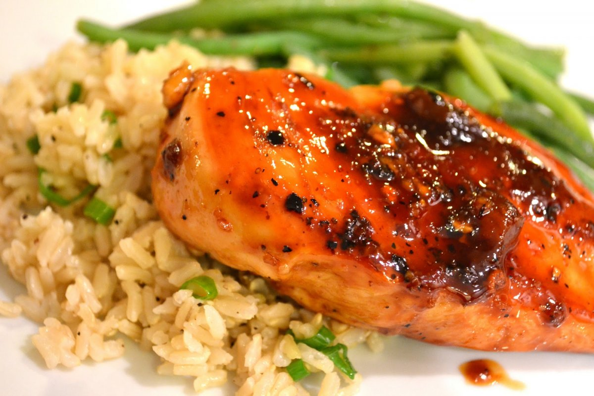

Cooking Store

Ингридиенты
1. Куриное филе - 340 г (2 шт.).
2. Рис (у меня басмати) - 140 г.
3. Морковь (крупная) - 80 г (0,25 шт).
4. Лук репчатый (некрупный) - 80 г (1 шт.).
5. Чеснок (крупный) - 8 г (1 зубчик).
6. Соль - по вкусу.
7. Перец чёрный молотый - 0,25 ч. ложки (по вкусу).
8. Масло подсолнечное - 30-45 мл (2-3 ст. ложки).
Процесс приготовления
Посмотрите обучабщее видео или
следуйте инструкции ниже
Рецепт
1. Подготовьте необходимые ингредиенты. Также для готовки понадобится 450 мл кипятка.
2. Куриное филе без кожи промойте, обсушите с помощью бумажного полотенца и выложите на разделочную доску.
Острым ножом сделайте на верхней стороне каждой куриной грудки ромбовидные насечки, прорезая примерно до половины.
3. Подготовленное филе натрите солью и чёрным молотым перцем.
4. В сковороде разогрейте подсолнечное масло и выложите туда куриное филе надрезами вверх.
5. Обжарьте филе на среднем огне по 5 минут с каждой стороны.
6. Лук очистите и нарежьте полукольцами.
7. Очищенную морковь нарежьте полукружиями.
8. Крупный зубчик чеснока очистите от шелухи и нарежьте пластинками.
9. Обжаренное куриное филе переложите в тарелку.
10. В освободившуюся сковороду при необходимости долейте ещё немного масла, разогрейте. Отправьте в сковороду лук, морковь и чеснок.
11. Обжарьте овощи на сильном огне 3 минуты, часто перемешивая.
12. Верните куриное филе в сковороду, выложив его на овощи. Туда же влейте кипяток (50 мл).
Накройте сковороду крышкой и тушите куриное филе с овощами на среднем огне 5 минут.
13. Затем между куриным филе распределите рис (я его предварительно не промывала).
14. 400 мл кипятка смешайте с 1 ч. ложкой соли и влейте в сковороду.
15. Аккуратно перемешайте рис с овощами вокруг куриного филе. На сильном огне доведите жидкость до кипения.
16. Огонь убавьте до минимума, накройте сковороду крышкой и готовьте блюдо до того момента,
пока рис не будет полностью готов, а воды в сковороде не останется. Мне понадобилось 25 минут.
17. Куриное филе с рисом, на сковороде, готово!